Half Court Sports
A mobile app created to help build lasting connections between sports fans and female athletes
Duration
July - August 2022
Role
Designer, Researcher
Tools
Figma, FigJam, Miro
Context
While watching the Creighton Bluejays upset the Iowa Hawkeyes during the 2022 women’s NCAA March Madness basketball tournament, I noticed that the arena was fully packed with passionate fans. Seeing the sold-out crowd underscored the fact that there is an obvious demand for women’s sports, yet casual sports fans, like myself, still gravitate towards men’s sports due to extensive coverage and exposure of men’s sports compared to women’s sports.
This inspired Half Court Sports, a personal project with the goal of helping sports fans build meaningful connections with female athletes and learn more about women's sports.
Research
Secondary Research
To better understand this issue, I decided to conduct secondary research by reading journal articles and fan data to get a more representative snapshot of the problem and the target user base.
User Interviews
I also conducted three user interviews to get a better sense of users' frustrations with the current landscape of women's sports. Through these interviews, I wanted to understand how users keep up with their favorite athletes and teams, as well as their current engagement level with women's sports.
Using my findings, I created two user personas as well as user journey maps to illustrate their emotional state at each decision point.
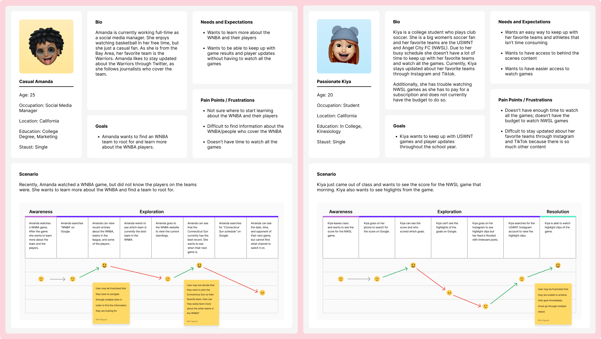
Competitive Analysis
Next, I researched five different sports media platforms to identify essential features and find any gaps in the current market.
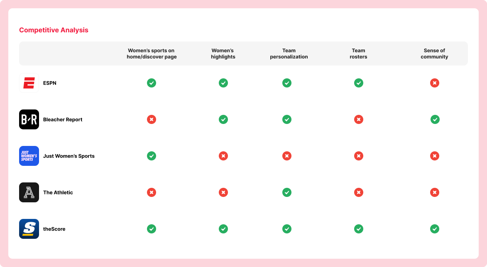
Research Findings
After conducting extensive research, I used some of my key research findings to focus on throughout the ideation process.
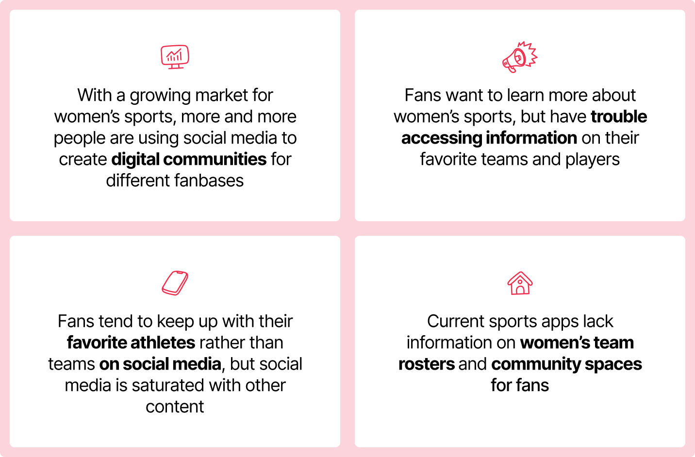
Define
After conducting research and analysis, I developed three concise problem statements that effectively define the challenge at hand.
How might we highlight female athletes’ stories and backgrounds to help establish a connection with fans?
How might we make women's sports content more accessible for all types of sports fans?
How might we create digital communities to help grow the fanbase for women’s sports?
Ideation
Site Mapping
Prior to sketching my initial ideas, I strategically developed a site map to effectively plan and prioritize the important features and screens that needed to be implemented in the project.
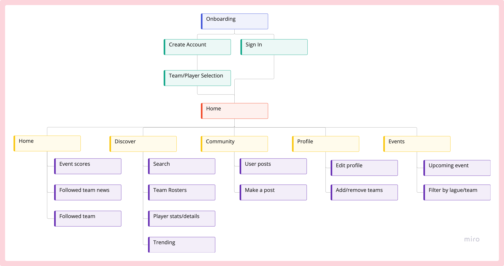
Sketches
After organizing the key features, I proceeded to create a series of sketches that established the rough layout of the mobile app.
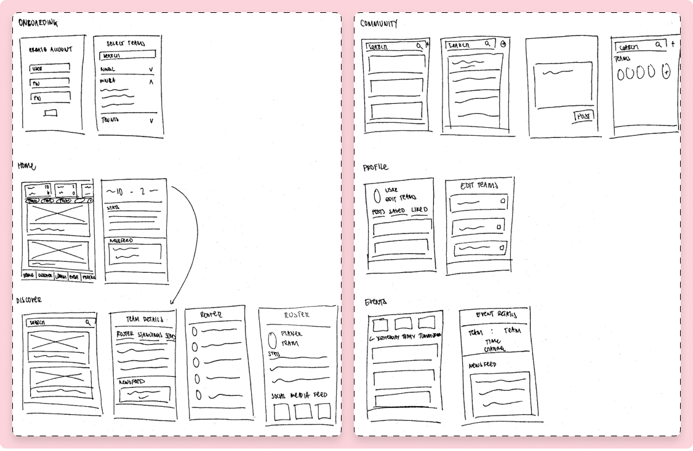
Low Fidelity Wireframes
After reviewing my paper sketches, I proceeded to create low-fidelity wireframes that built upon the initial rough layout. Through this iterative process, I added more detailed designs and features to the wireframes.
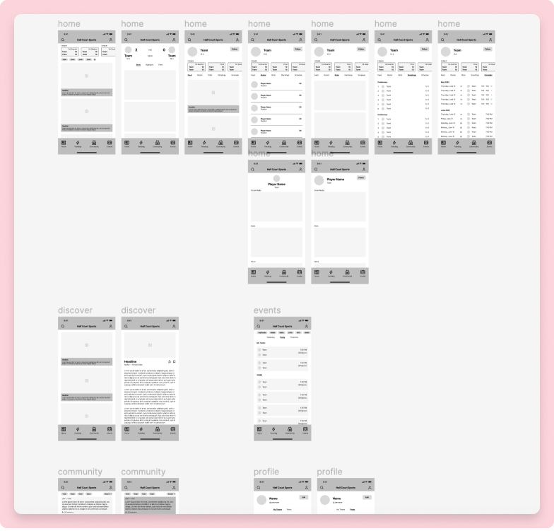
Final Designs
After multiple iterations and refinements, I arrived at a final user-centered design solution that is a reflection of my research findings and problem statements.
Onboarding
During the onboarding process, the user can choose their favorite leagues, teams, or players to access a personalized home feed when entering the app to have a customized experience tailored to their interests and preferences.
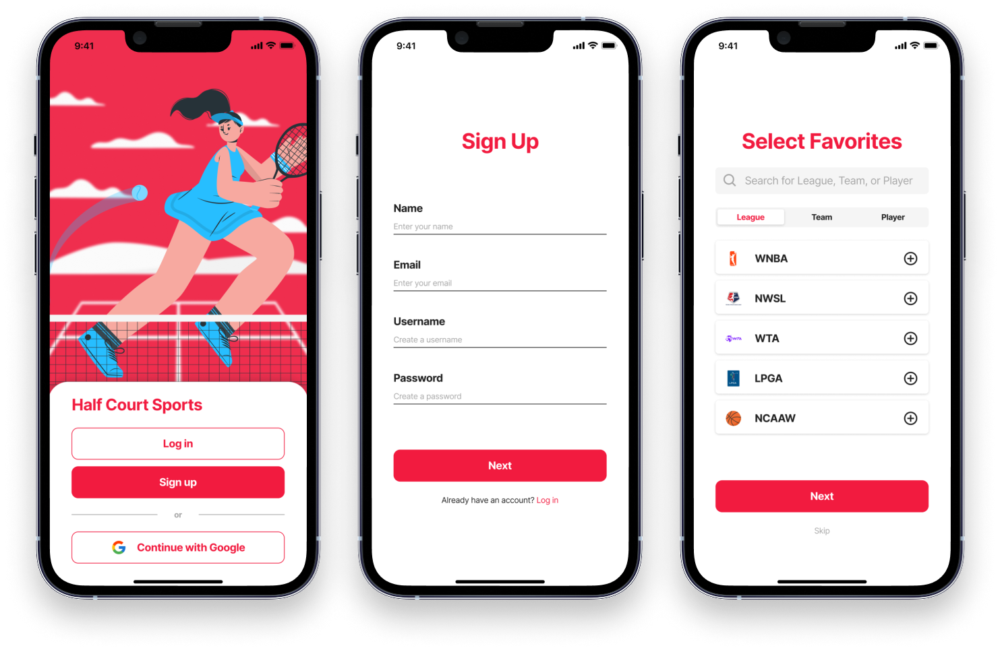
Home & Event Details
On the homepage, users are presented with the upcoming events for their teams, as well as their personalized feed consisting of social media content, articles, and highlights. This personalized feed provides users with a quick and easy way to stay up-to-date with the latest news and updates from their preferred sources.
Once the user selects an event, they are able to see the main feed for that event, as well as important player and team stats.
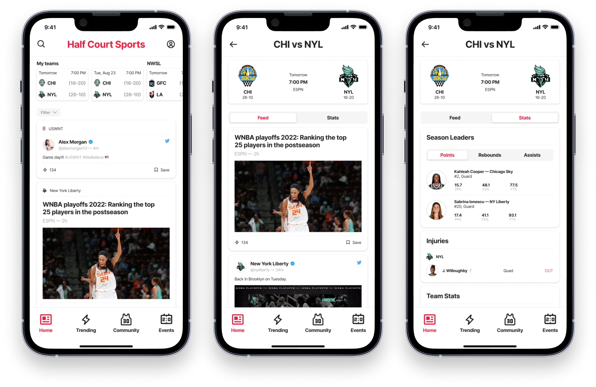
Team Details
When a user selects a team to view, they are able to access the team's upcoming events, league standings, entire schedule, and a dedicated team feed. One of the key features I prioritized based on market research is the team roster, which allows users to view player images and stats to gain a deeper understanding of the individual players on the team.
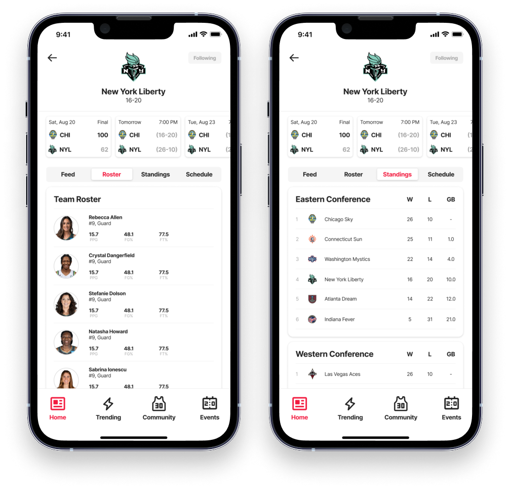
Player Details
On a player's page, users can access a variety of information, including the player's social media feed, relevant articles, and highlights.
By being able to view the player's social media content, users can gain insights into the player's personality and interests beyond sports. This allows users to build a deeper connection with the player and creates a more engaging and personalized user experience.
In addition to the social media content, users can also access the player's stats and a brief biography, which includes the player's career accolades. This provides users with a more detailed look at the player's performance and achievements throughout their career.
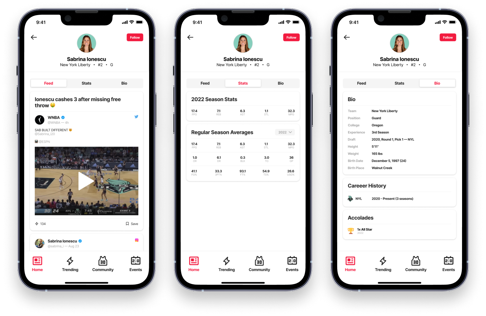
Trending
The trending page features a curated selection of articles and highlights from leagues, teams, and players that users may not be following. This provides users with an opportunity to discover new and exciting content from a wide range of sources.
By showcasing trending content from across the platform, users can expand their knowledge and interest in different leagues, teams, and players. This helps create a more engaging and diverse user experience, and allows users to stay up-to-date with the latest news and trends in the world of women's sports."
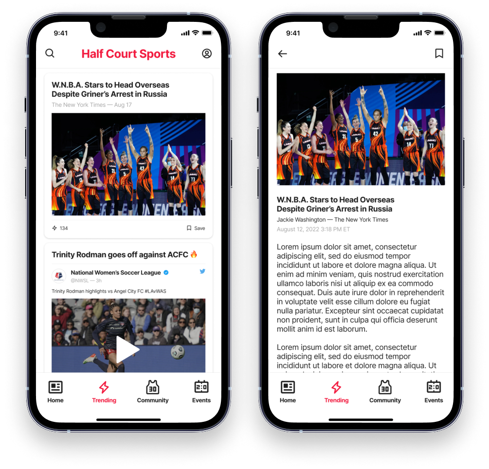
Community & Events
The community page provides users with a platform to share their reactions, opinions, and comments on a team's community. This creates a space where users can engage with one another and build a sense of community around their shared interests.
The events page provides users with an at-a-glance view of upcoming events, allowing them to easily plan and stay up-to-date with their favorite sports.
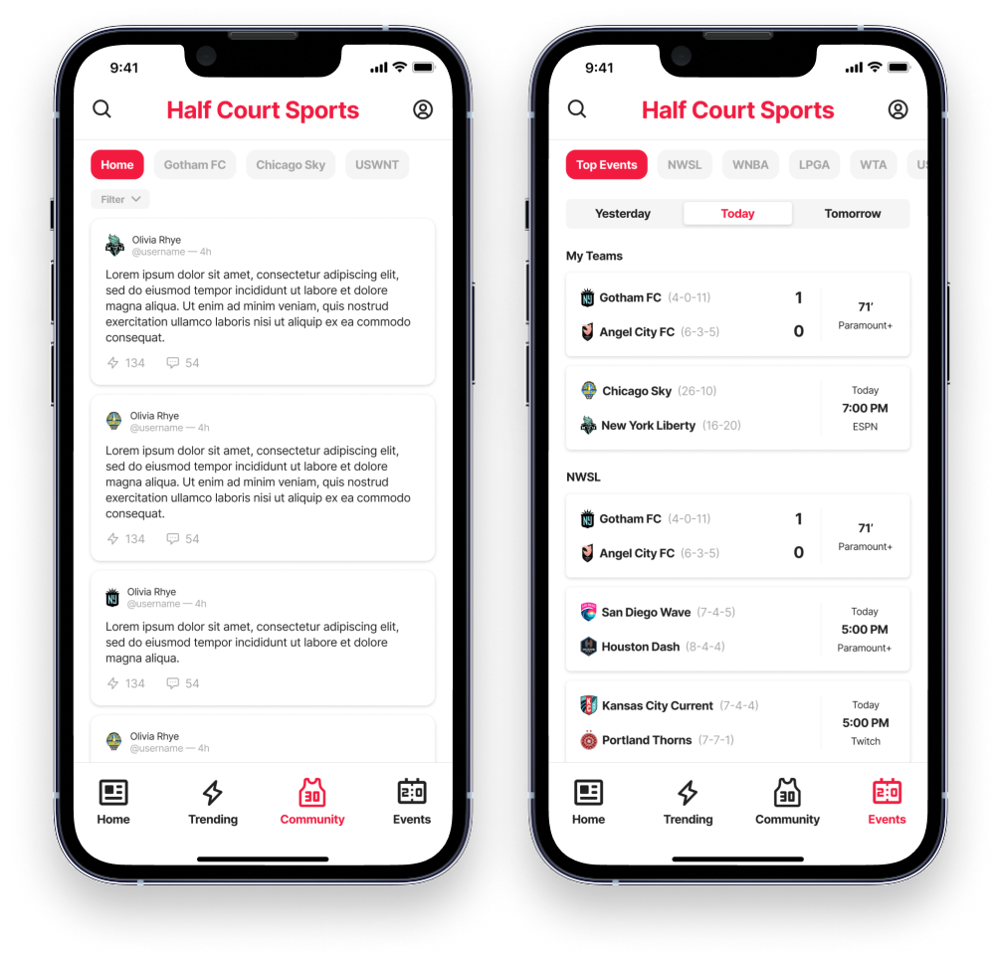
Reflection
As a personal project, this design allowed me to experiment with different research methods and technical aspects of design. Throughout the process, I learned several key lessons that will impact my future design work.
Refer back to your research findings
One of my main takeaways was the importance of constantly referring back to my research findings and problem statements. At times, I found myself exploring design ideas that did not align with the user's needs or the original problem statements. Having these documents as a reference helped me to stay on track and ensure that my designs were user-centered.
Your first solution is never your final solution
I also learned that my first design solutions were not necessarily my final solutions. Through multiple iterations and changes, my designs evolved and improved. However, I still believe there is room for improvement, and I would like to continue iterating on the designs presented in this project.
Focus on one problem
During the design process, I initially attempted to solve several problems at once through my three problem statements. However, I realized that quality is better than quantity, and I could have focused on solving one problem exceptionally well.
Future Steps
If I had more time, I would have liked to conduct user testing and build out different edge cases and interactions to provide a more complete user experience.
Additionally, I am interested in exploring the comment section on different posts as it can create a sense of community within the app.

Edsight Design System
Rethinking data visualizations for education

Amazon Redesign
Redesigning Amazon's homepage for goal-oriented shoppers
last updated april 2023